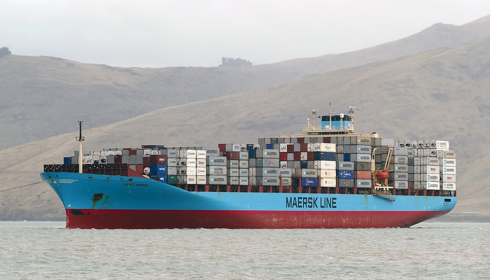
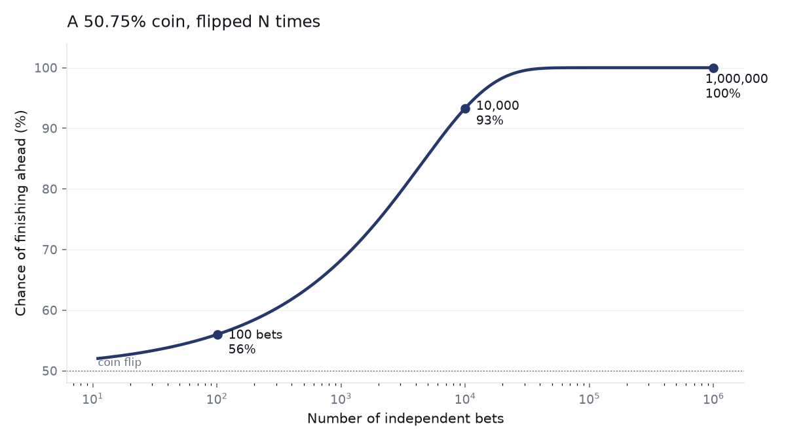
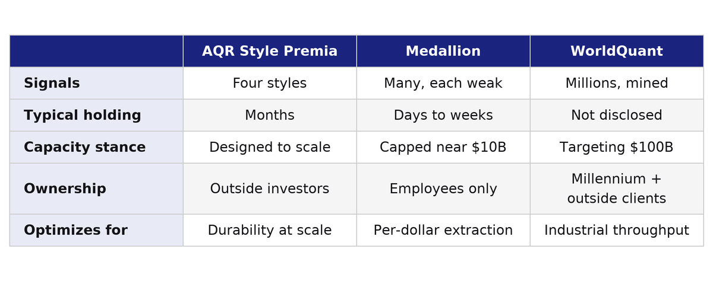

Breadth costs capacity when it demands speed, illiquidity or crowding.
AQR's Style Premia strategy runs on four ideas. Renaissance's Medallion fund, which Bloomberg called "probably the world's most successful money machine" in 2017, trades a very slight edge hundreds of thousands of times a day and keeps its own size capped.
Both designs are coherent. Signal breadth and capacity are different quantities, and more of one costs the other only under specific conditions. The public record of the two firms shows when those conditions bind.

Photo: Bernard Spragg. NZ, CC0 1.0.
The Few-Signal Discipline
The strategy, offered to US investors as the AQR Style Premia Alternative Fund, rests on four styles: value, momentum, carry and defensive. Its May 2026 prospectus describes them held long and short across equities, bonds, interest rates, commodities and currencies. Two AQR researchers, Israel and Maloney (2014), define a style as "a disciplined, systematic method of investing that can produce long-term positive returns across markets and asset groups, backed by robust data and economic theory." The same paper explains why size, one of the most celebrated factors in academic finance, is not among the four: it "has not proven as robust, can't be easily applied across other asset groups, and often entails betting on illiquid securities."
Berkin and Swedroe (2016) later set out five criteria for any factor that describe much the same bar: persistent, pervasive, robust, investable and intuitive. The case for that austerity is protection against data mining. If a thousand people each flip a coin ten times, someone flips ten heads, and that person is not a genius. A strategy that admits few signals, each carrying an economic rationale, is structurally protected from hiring that person.
Israel and Maloney put the four styles' combined backtest at a Sharpe ratio above 2, called that figure "likely too high to be the basis of return expectations", and presented a more realistic version, with estimated costs and a heavy discount applied, at a Sharpe ratio close to 1.
The years that followed were harsher. The Style Premia fund lost money in 2018, 2019 and 2020, according to its own fact sheet. In May 2020, AQR's Cliff Asness wrote that value spreads were near or beyond their prior extremes, which had been set in 2000 or 2008 depending on the measure.
Firm and fund sit at very different scales. AQR as a whole reported about $187.3 billion under management as of December 31, 2025, spread across many strategies. The Style Premia fund itself reported about $2.5 billion in assets as of June 30, 2026, on the same fact sheet. The design favors capacity: slow styles, with portfolio turnover reported in the prospectus at 142 percent of average assets for the most recent fiscal year. Slow turnover across broad markets lets a strategy grow without its own trading destroying the prices it depends on. AQR sells durable, explainable returns at scale, not the highest ones.
The Many-Signal Discipline
The Medallion quote that matters comes from Gregory Zuckerman's The Man Who Solved the Market, in which Robert Mercer, who shared Renaissance's CEO title with Peter Brown, tells a friend: "We're right 50.75 percent of the time... but we're 100 percent right 50.75 percent of the time." Zuckerman notes that Mercer likely wasn't giving the firm's exact edge. The point was that the advantage was slight. A coin flip is 50 percent. The entire miracle is in the counting.
Flip that coin a hundred times and the odds of finishing ahead are barely better than even. Flip it ten thousand times and the odds approach ninety-three percent. Flip it a million times and being ahead is a statistical certainty.

Probability of finishing ahead with a 50.75% per-bet edge, by number of independent bets (binomial; 50.75% from Mercer's remark as quoted in Zuckerman, 2019). Chart: Vertex.
Medallion, as reported in the same book, executes 150,000 to 300,000 trades a day and holds positions for days to weeks. By Bloomberg's 2017 count, it had made about $55 billion over the previous 29 years, with average returns after fees of about 40 percent, for a fund that manages money only for Renaissance's employees. It is not smarter per trade. It built a way to place a very slightly favorable bet an enormous number of times: the edge and the counting are separable, and Medallion industrialized the counting.
The binomial arithmetic assumes every flip is independent, and trades are not. Many of them share a horizon, overlap in exposure, or express the same signal across related stocks. The count of independent bets therefore sits well below the count of trades, and the curve above describes independent bets only.
According to the book, by 1997 more than half of the trading signals the team was discovering were nonintuitive, and statistically strong ones were traded anyway, with limited money at first. "If there were signals that made a lot of sense that were very strong, they would have long-ago been traded out," Peter Brown explains in the book. A few-signal discipline cannot operate that way. A many-signal discipline almost has to.
Grinold and Kahn's fundamental law of active management formalizes the relationship: the information ratio grows with skill times the square root of breadth. Breadth in that law is the number of independent investment opportunities, not the number of signals or trades. A thousand highly correlated signals behave more like a handful of bets than like a thousand. Effective breadth depends on how correlated the signals are, how much their exposures overlap, how their horizons line up, and how much of each forecast the portfolio's constraints let through to positions. Raw signal count is the easy term to grow. Effective breadth is the one the law rewards.
The Industrial Middle
AQR and Medallion sit far apart on signal count, holding period and capacity. WorldQuant pushes signal count furthest.

Vertex summary, drawing on AQR's 2026 prospectus, Zuckerman (2019), Bloomberg (2017), Tulchinsky (2022) and Hedgeweek (2024). Table: Vertex.
In 2010 WorldQuant set itself a target of one million alphas, which it describes as "the algorithms we use to build our strategies", at a time when it was producing only several thousand a year. It hit the target by 2016 and has since described its repository as being in the millions. Part of the mining is crowdsourced: its BRAIN platform lists more than 16,000 research consultants.
That is a raw count. Alphas mined from the same data tend to overlap, and effective breadth is what remains once the overlap is accounted for. Pooling signals into combined strategies is also one of the ways breadth and capacity can grow together: when signals are combined before trading, opposing views net out internally, so more signals need not mean more trades.
WorldQuant's capital has grown alongside its signal count. The firm managed money only for Millennium until 2018. By 2024 it ran about $10 billion for other clients through a joint venture with Millennium, plus about $7 billion for Millennium itself, Hedgeweek reported, and its leadership named a goal of $100 billion across its platforms.
The Natural Experiment
Renaissance itself supplies the clearest evidence of when breadth costs capacity. Medallion's assets are capped at about ten billion dollars, and each year's profit on that capped base is paid out rather than reinvested in the fund, as Bloomberg reported in 2017. The same report put the whole firm at about $42 billion, most of it in funds open to outside investors. The likely reason for the cap is capacity: at Medallion's trading speed, additional capital would move prices before the edge could be collected.
Those outside funds run on longer horizons. The Renaissance Institutional Equities Fund (RIEF) has "a 6-month to one-year holding time", a Medallion investor told Institutional Investor. Same firm. In 2020, the same report said, Medallion gained 76 percent, citing one of its investors, while RIEF lost 22.62 percent and the Renaissance Institutional Diversified Alpha fund (RIDA) 33.58 percent through December 25, citing HSBC's weekly scoreboard. The report put RIEF's annualized return at 8.05 percent, below the S&P 500's 9.6 percent over the same period.
The longer horizon buys capacity by giving up the short holding periods and dense betting behind Medallion's edge. The trade-off binds here because Medallion's breadth comes from speed, and fast turnover is precisely the condition under which more capital means more market impact.
When the Trade-Off Binds
AQR answers one question: how much durable, explainable return large pools of capital can actually hold. Medallion answers a different one: how much return a fixed, small pool of capital can extract once capacity is abandoned entirely.
Breadth and capacity are separate properties, not one budget. Additional breadth reduces capacity when it requires faster turnover, less-liquid assets, or correlated trading that adds market impact. It need not when the new signals trade slowly, reach into broader and deeper markets, net against each other before execution, or carry low correlation with what is already held. Better execution raises both at once.
Whether more signals cost capacity is an empirical question about turnover, liquidity and correlation, answered design by design.
Sources
- Roux, P. and Burton, K. (2017). "Renaissance Mints Another Billionaire, With Two More on the Cusp." Bloomberg, April 25, 2017, as syndicated by WealthManagement.com. Link
- AQR Funds (2026). AQR Style Premia Alternative Fund, Summary Prospectus, May 1, 2026. SEC Form 497K. Link
- Israel, R. and Maloney, T. (2014). "Understanding Style Premia." The Journal of Investing 23(4), 15–22. Link
- Fridson, M. (2018). Review of Berkin, A. L. and Swedroe, L. E. (2016), Your Complete Guide to Factor-Based Investing: The Way Smart Money Invests Today. Financial Analysts Journal book review, CFA Institute, July 12, 2018. Link
- AQR Funds (2026). AQR Style Premia Alternative Fund, Fact Sheet, as of June 30, 2026. Link
- Asness, C. (2020). "Is (Systematic) Value Investing Dead?" AQR Capital Management, May 8, 2020. Link
- GuideStone Funds (2026). Prospectus supplement, February 27, 2026, sub-adviser description of AQR Capital Management. SEC Form 497K. Link
- Zuckerman, G. (2019). The Man Who Solved the Market: How Jim Simons Launched the Quant Revolution. Portfolio/Penguin Random House. Link
- Robeco (2018). "Fundamental Law of Active Management Shows Way to Higher Information Ratio." Robeco Insight, April 9, 2018. Link
- Tulchinsky, I. (2022). "The Power of Exponential Thinking." WorldQuant. Link
- WorldQuant. "WorldQuant BRAIN." Platform page, accessed September 2026. Link
- Hedgeweek (2024). "WorldQuant's non-Millennium assets up to $10bn." July 24, 2024. Link
- Celarier, M. (2021). "Renaissance's Medallion Fund Surged 76% in 2020. But Funds Open to Outsiders Tanked." Institutional Investor, January 13, 2021. Link